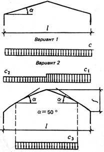
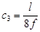
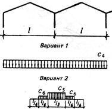
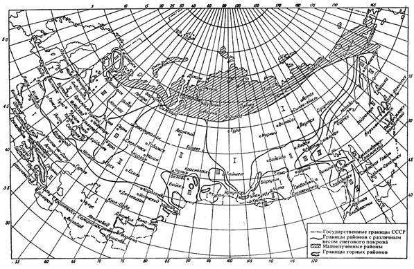

СТРОИТЕЛЬНЫЕ НОРМЫ И ПРАВИЛА
ТЕПЛИЦЫ И ПАРНИКИ
СНиП 2.10.04-85
ГОСУДАРСТВЕННЫЙ КОМИТЕТ СССР ПО ДЕЛАМ СТРОИТЕЛЬСТВА
МОСКВА 1985
РАЗРАБОТАНЫ Гипронисельпромом Минплодоовощхоза СССР (канд. техн. наук Н.А. Нестругин - руководитель темы; канд. техн. наук В.И. Гореза; В.К. Бычков).
ВНЕСЕНЫ Министерством плодоовощного хозяйства СССР
ПОДГОТОВЛЕНЫ К УТВЕРЖДЕНИЮ Главтехнормированием Госстроя СССР (Л.Н. Прохоров).
С введением в действие СНиП 2.10.04-85 «Теплицы и парники» с 1 января 1986 г. утрачивает силу СНиП II-100-75 «Теплицы и парники. Нормы проектирования».
При пользовании нормативным документом следует учитывать утвержденные изменения строительных норм и правил и государственных стандартов, публикуемые в журнале «Бюллетень строительной техники» Госстроя СССР и информационном указателе «Государственные стандарты СССР» Госстандарта.
|
Государственный комитет СССР по делам строительства |
Строительные нормы и правила |
СНиП 2.10.04-85 |
|
Теплицы и парники |
Взамен СНиП II-100-75 |
Настоящие нормы распространяются на проектирование теплиц и парников для выращивания овощей и рассады.
1.1. Степень огнестойкости и пределы огнестойкости строительных конструкций теплиц, парников и соединительных коридоров не нормируются.
1.2. Общая площадь теплиц определяется в соответствии с требованиями СНиП 2.09.02-85*.
Измененная редакция. Изм. № 1.
1.3. Расстояние между теплицами, эксплуатируемыми в течение всего года (зимними), следует назначать не менее 6 м, между теплицами, эксплуатируемыми весной, летом и осенью (весенними), - не менее 1,5 м.
1.4. Площадки для теплиц и парников должны быть спланированы с уклоном для отвода атмосферных вод от сооружений. Отметка почвы в сооружениях должна быть выше планировочной отметки примыкающих к ним участков площадки не менее чем на 0,1 м.
1.5. При проектировании теплиц в районах с объемом снегопереноса за зиму свыше 200 м3/м, необходимо предусматривать искусственные снегозащитные мероприятия и устройства (при отсутствии естественных), совмещая их функцию с ветрозащитой и ограждением территории.
В качестве снегозащитных устройств следует предусматривать лесонасаждения, щиты и заборы.
Измененная редакция. Изм. № 1.
1.6. Обеспечение доступности зданий теплиц и парников и входящих в их состав помещений для инвалидов, если для них предусматриваются рабочие места, следует выполнять в соответствии с требованиями, изложенными в СНиП 2.09.02-85*; санитарно-бытовое обслуживание работающих инвалидов - в соответствии со СНиП 2.09.04-87*.
Квота рабочих мест для инвалидов, виды и группы инвалидности работников, для которых могут быть организованы рабочие места в теплицах, парниках и относящихся к ним вспомогательных помещениях, устанавливаются в задании на проектирование с участием территориальных органов социальной защиты населения в соответствии с правилами, установленными в РДС 35-201-98 Госстроя России и Минтруда России «Порядок реализации требований доступности для инвалидов к объектам социальной инфраструктуры».
Пункт 1.6 введен дополнительно. Изм. № 1.
|
Внесены |
Утверждены |
Срок |
2.1. Объемно-планировочные решения теплиц должны отвечать требованиям норм технологического проектирования, утвержденных в установленном порядке и обеспечивать экономию топливно-энергетических ресурсов за счет теплоизоляции ограждений и снижения их относительной площади.
Теплицы следует проектировать однопролетными или многопролетными. Тип теплиц для каждой зоны определяется технико-экономическим обоснованием.
Парники следует проектировать с односкатным или двускатным покрытием.
Измененная редакция. Изм. № 1.
2.2. Вспомогательные помещения для работающих в теплицах и парниках следует проектировать в соответствии с требованиями СНиП 2.09.04-87*.
Измененная редакция. Изм. № 1.
2.3. Геометрические параметры теплиц и парников должны назначаться в соответствии с технологической частью проекта. При этом пролеты однопролетных теплиц не должны превышать 18 м, многопролетных - 9 м; высота от отметки поверхности пола или почвы до низа конструкций теплиц или подвешенного оборудования и коммуникаций должна назначаться из условия свободного проезда предусмотренных технологией машин и механизмов, но не менее 2,2 м.
Пролет парников должен быть не менее 1,5 м.
2.4. Теплицы следует проектировать с деревянным или металлическим каркасом в соответствии с требованиями СНиП II-25-80, СНиП II-23-81* и СНиП 2.03.06-85. Парники необходимо проектировать с деревянным или железобетонным каркасом.
Измененная редакция. Изм. № 1.
2.5. Светопрозрачные ограждения зимних теплиц следует проектировать из стекла или пленки, как правило, двухслойными или однослойными с дополнительной трансформирующейся шторой или теплозащитным экраном, а весенних теплиц - из пленки, снимаемой на зимний период.
2.6. Высота цоколя теплиц должна быть не менее 0,3 м.
В стенах теплиц, предназначенных для выращивания рассады, высаживаемой в открытый грунт, необходимо предусматривать вентиляционные проемы.
2.7. Отметка верха фундаментов под опоры (стойки каркаса) теплиц должна быть выше отметки поверхности почвы не менее чем на 0,3 м. При расположении многопролетных теплиц на наклонных площадках отметки верха отдельных фундаментов допускается назначать переменными с уклоном теплиц по рельефу местности, но не более:
остекленных: вдоль коньков (лотков) - 2 %, поперек коньков (лотков) - 1,5 %;
пленочных - 3 % в обоих направлениях.
2.8. Уклон прямолинейных скатов покрытий теплиц надлежит принимать не менее 45 %, криволинейных, стрельчатого очертания - не менее 20 %.
В многопролетных теплицах ендовы необходимо проектировать в виде лотков с уклоном не менее 0,2 % и шириной не менее 0,2 м.
Уклон покрытия парников должен быть не менее 6 %.
2.9. Суммарная площадь светонепроницаемых конструкций теплиц должна составлять не более 15 % общей площади при светопрозрачном ограждении из стекла и 10 % - при ограждении из пленки.
2.10. Для крепления стекла к шпросам должны применяться специальные зажимы (кляммеры, профильные элементы и др.), для герметизации стыков стеклянных ограждений (в местах сопряжения со шпросами в горизонтальных стыках) - прокладки или специальные эластичные мастики, обеспечивающие воздухо- и влагонепроницаемость.
2.11. Антикоррозионную защиту строительных конструкций и изделий следует назначать в соответствии с требованиями СНиП 2.03.11-85, при этом среду внутри теплиц по степени агрессивного воздействия следует относить для стальных конструкций - к слабоагрессивной, для алюминиевых и деревянных - к неагрессивной.
2.12. Нагрузки на строительные конструкции теплиц и парников следует принимать в соответствии с указаниями СНиП 2.01.07-85, учитывая следующие требования:
а) вес снегового покрова на 1 м2 горизонтальной поверхности земли при проектировании зимних теплиц с однослойными ограждениями, с двухслойными ограждениями при подаче теплоносителя между слоями, а также однопролетных пленочных теплиц с двухслойным ограждением следует принимать для районов: I - 100 Па (10 кгс/м2), II - 150 Па (15 кгс/м2), III - 200 Па (20 кгс/м2), IV - 400 Па (40 кгс/м2), при проектировании весенних пленочных теплиц с однослойным ограждением - 100 Па (10 кгс/м2) для всех районов. Районирование территории СССР по весу снегового покрова приведено в обязательном приложении 2.
Коэффициент перехода от веса снегового покрова на горизонтальной поверхности земли к нормативной нагрузке на покрытие теплиц и схемы распределения снеговой нагрузки необходимо принимать по обязательному приложению 1. Расчетная снеговая нагрузка на покрытие теплиц должна приниматься с коэффициентом перегрузки 1,4;
б) скоростной напор ветра следует принимать переменным по высоте с коэффициентом 1 на высоте 10м и с коэффициентом 0,6 на высоте 2 м и менее; для промежуточных значений высот коэффициенты определяют линейной интерполяцией; для теплиц с ограждением из пленки указанные коэффициенты следует уменьшать на 20 %;
в) нормативную нагрузку на несущие конструкции теплиц от шпалер с подвешенными растениями следует принимать равной 150 Па (15 кгс/м2) и относить к кратковременной с коэффициентом перегрузки 1,3;
г) водоотводящие лотки (металлические и деревянные) покрытий многопролетных зимних теплиц необходимо проверять на нормативную сосредоточенную вертикальную нагрузку 1000 Н (100 кг), весенних пленочных теплиц - на две сосредоточенные вертикальные нагрузки 1000 Н (100 кг) каждая (приложенные на расстоянии между ними 1 м) с коэффициентом перегрузки 1,2;
д) нагрузки от технологического оборудования (установок электрооблучения, трубопроводов и др.) следует принимать по данным соответствующих частей проекта.
2.13. Расчетные величины кратковременных нагрузок или соответствующие им усилия следует умножать на коэффициенты сочетания 0,8 при сочетании двух и 0,7 при сочетании трех и более нагрузок.
2.14. Теплицы в сейсмических районах должны проектироваться без учета сейсмических воздействий.
2.15. Толщину стальных гнутых профилей для ограждающих конструкций теплиц необходимо принимать по расчету, но не менее 1 мм, деталей крепления стекла и пленки - не менее 0,4 мм.
2.16. Гибкость стальных сжатых элементов каркаса теплиц не должна превышать 180, растянутых элементов и связей - величин, указанных в СНиП II-23-81.
2.17. Прогибы стальных конструкций теплиц следует определять в соответствии с указаниями СНиП II-23-81. При этом вертикальные относительные прогибы элементов остекленных теплиц не должны превышать для шпросов - 1/150, прогонов - 1/200, лотков - 1/300, ригелей - 1/250, ферм, несущих технологическое оборудование, - 1/400, ферм, не несущих технологического оборудования, -1/250, их пролета.
Относительный прогиб изгибаемых элементов пленочных теплиц не должен превышать 1/75 пролета.
2.18. При расчете стальных конструкций теплиц из гнутых профилей толщиной 3 мм и менее при двух и более гибах в поперечном сечении и при отношении высоты стенки или ширины полки к радиусу гиба менее 30 величины расчетного сопротивления стали на растяжение, сжатие и изгиб следует увеличивать на 10 %.
2.19. Деревянные конструкции теплиц следует проектировать в соответствии с указаниями СНиП II-25-80. При этом величины расчетного сопротивления древесины элементов каркаса пленочных теплиц в расчетах их на воздействие ветровой и снеговой нагрузок следует умножать на коэффициент условий работы, равный 1,3 (для всех видов сопротивлений). Другие коэффициенты условий работы, учитывающие воздействие кратковременных нагрузок, применять не следует.
2.20. При расчете пленочных ограждений теплиц на воздействие ветровой нагрузки расчетное сопротивление полиэтиленовой пленки (ГОСТ 10354-82*) на растяжение следует принимать 5 МПа (50 кгс/см2), модуль упругости 75 МПа (750 кгс/см2), на воздействие снеговой нагрузки или одновременно снеговой и ветровой нагрузок величину расчетного сопротивления и модуля упругости следует умножать на коэффициент 1,5.
Измененная редакция. Изм. № 1.
2.21. Для теплиц следует применять стекло (ГОСТ 111-90) унифицированных размеров; толщину стекла следует назначать по расчету, но не более 4 мм.
Измененная редакция. Изм. № 1.
2.22. При расчете стеклянных ограждающих конструкций теплиц следует принимать: величину расчетного сопротивления стекла на изгиб 12,5 МПа (125 кгс/см2), модуль упругости 7,3×104 МПа (7,3×105 кгс/см2) и коэффициент поперечной деформации 0,22. При этом расчетные сопротивления стекла следует умножать на следующие коэффициенты условий работы: при закреплении стекла непрерывно по всему контуру (профильными элементами) - 1; при закреплении в отдельных точках контура (кляммерами и т.п.) - 0,8. Величину расчетного сопротивления стекла вертикальных ограждений необходимо умножать дополнительно на коэффициент условий работы, равный 1,2.
3.1. Нормы и режим водопотребления, качество и температуру воды для полива и других технологических целей следует принимать в соответствии с требованиями норм технологического проектирования, утвержденных в установленном порядке.
Измененная редакция. Изм. № 1.
3.2. При проектировании систем водоснабжения теплиц и парников необходимо руководствоваться указаниями СНиП 2.04.01-85* и СНиП 2.04.02-84* с учетом требований настоящего раздела.
Измененная редакция. Изм. № 1.
3.3. Для полива в теплицах и для других производственных целей допускается при обосновании подавать воду питьевого качества. Если в сеть производственного водопровода подаются удобрения или другие вещества, он должен присоединяться к хозяйственно-питьевому водопроводу с разрывом струи не менее 50 мм от максимального уровня воды в баке или в резервуаре до низа подающего трубопровода.
3.4. Предусматривать внутреннее и наружное пожаротушение теплиц и парников не следует.
3.5. Внутренний водопровод теплиц должен присоединяться к наружному, как правило, одним вводом.
3.6. Водопровод в теплицах должен быть оборудован форсунками или капельницами для полива почвы, форсунками для увлажнения воздуха, а также кранами для полива, мытья проездов и других технологических целей.
В теплицах, предназначенных для выращивания овощей на искусственных субстратах, водопровод должен быть оборудован в соответствии с требованиями технологии.
Водопровод парников должен иметь кроны для полива.
3.7. Постоянный свободный напор воды в трубопроводах у форсунок и капельниц, зоны их действия и другие характеристики, необходимые для проектирования, следует принимать по данным заводов-изготовителей.
3.8. Краны для полива должны иметь условный диаметр 20 мм. Радиус зоны обслуживания одним краном не должен быть более 45 м.
3.9. Внутренние сети водопровода и водостоков теплиц следует проектировать, как правило, из неметаллических труб; гребенки, фасонные части, их соединения и при обосновании магистральные трубопроводы, прокладываемые по коридорам и теплицам, - из металла.
3.10. Внутренние сети водопровода и водостоков теплиц допускается прокладывать по поверхности земли и в земле.
Трубопроводы должны иметь устройства для опорожнения.
3.11. На вводах в теплицы следует предусматривать установку водомеров. Допускается установка водомеров на группу или блок теплиц.
3.12. Запорную арматуру необходимо устанавливать на вводах в теплицы и на ответвлениях от магистральных трубопроводов теплиц и парников.
3.13. Управление поливом следует предусматривать, как правило, дистанционным по заданной программе.
3.14. Категория надежности систем водоснабжения теплиц должна быть не ниже II, парников - не ниже III согласно классификации СНиП 2.04.02-84*.
Измененная редакция. Изм. № 1.
3.15. Многопролетные зимние теплицы следует проектировать, как правило, с внутренними водостоками для отвода атмосферных осадков из лотков покрытия. Многопролетные весенние и однопролетные весенние и зимние теплицы необходимо проектировать без внутренних водостоков.
3.16. Расчетные расходы дождевых вод при гидравлическом расчете лотков на кровлях теплиц и сетей внутренних водостоков следует определять по методу предельных интенсивностей. При этом период однократного превышения интенсивности дождя в расчетах внутренних водостоков необходимо принимать, как правило, равным 0,5 года.
3.17. В зависимости от гидрогеологических условий площадки строительства необходимо предусматривать закрытый дренаж в зимних грунтовых теплицах и в рассадных отделениях весенних теплиц.
Расстояние от проектной отметки поверхности почвы до верха дренажа должно быть не менее 0,7 м. Устройство дренажа в парниках не допускается.
3.18. Дренаж должен обеспечивать оптимальный воздушно-влажностный режим корнеобитаемого слоя, своевременное отведение дренажных стоков согласно требованиям норм технологического проектирования, утвержденных в установленном порядке, а также предотвращение загрязнения грунтовых вод пестицидами и минеральными удобрениями.
Измененная редакция. Изм. № 1.
4.1. Отопление и вентиляцию теплиц и парников следует проектировать в соответствии с указаниями СНиП 2.04.05-91* и с учетом норм настоящего раздела.
Измененная редакция. Изм. № 1.
4.2. Отопление и вентиляция теплиц и парников совместно с другими системами должны обеспечивать в них параметры микроклимата (температуру воздуха и почвы, относительную влажность и скорость движения внутреннего воздуха) , установленные требованиями норм технологического проектирования, утвержденных в установленном порядке.
Теплицы должны быть оборудованы системой вентиляции. Необходимость устройства системы отопления теплиц и парников, а также ее мощность следует определять расчетом.
Измененная редакция. Изм. № 1.
4.3. Теплоснабжение теплиц и парников должно осуществляться за счет вторичных энергоресурсов, тепла геотермальных вод, при отсутствии указанных источников - от ТЭС, АЭС и ТЭЦ или собственных источников тепла.
4.4. При использовании для отопления теплиц вторичных энергоресурсов допускается применять схемы теплоснабжения с использованием пиковой котельной.
4.5. Расчетные параметры внутреннего воздуха и температуру почвы теплиц следует принимать в соответствии с требованиями норм технологического проектирования, утвержденных в установленном порядке.
Измененная редакция. Изм. № 1.
4.6. Расчетные параметры наружного воздуха следует принимать согласно СНиП 2.01.01-82:
а) в холодный период года для зимних теплиц - среднюю температуру наиболее холодных суток с обеспеченностью 0,92, среднюю относительную влажность наиболее холодного месяца и среднюю скорость ветра за январь; для весенних теплиц - среднюю температуру наиболее холодного месяца за период эксплуатации, сниженную на половину максимальной суточной амплитуды температуры воздуха, среднюю относительную влажность и среднюю скорость ветра в этом месяце;
б) в теплый период года (для всех теплиц) - среднюю температуру и среднюю относительную влажность самого жаркого месяца, среднюю скорость ветра за июль.
4.7. Отопление и вентиляцию теплиц и парников следует проектировать с учетом поступлений тепла, аккумулированного почвой в дневное время (холодный период года) и от солнечной радиации (теплый период года).
При расчете водяного отопления необходимо учитывать лучистую составляющую теплоотдачи нагревательными приборами (трубами) и изменение теплоотдачи по их длине.
4.8. В зимних теплицах следует предусматривать водяное отопление или водяное в сочетании с воздушным (комбинированное отопление) и водяной обогрев почвы. Комбинированную систему отопления необходимо предусматривать, как правило, в зонах с наружной температурой наиболее холодных суток минус 20 °С и ниже, в остальных районах ее применение должно быть обосновано. Тепловую мощность воздушного обогрева в системе комбинированного отопления следует принимать в однопролетных теплицах равной 35-50 %, в многопролетных - 20-40 % общего расхода тепла в расчетный период.
В весенних теплицах следует предусматривать воздушное отопление от калориферов и теплогенераторов, при обосновании - водяное отопление с регистрами из труб.
4.9. При проектировании систем отопления теплиц температуру теплоносителя следует принимать не более 150 °С.
4.10. Приборы отопления в теплицах необходимо размещать:
в верхней зоне - под покрытием, водосточными желобами и карнизами;
в средней зоне - у наружных стен, на внутренних стойках каркаса, затяжках рам или нижних поясах ферм и между рядами растений;
в нижней зоне - на почве между рядами растений, по контуру наружных стен на глубине 0,05-0,1 м и для обогрева почвы - на глубине не менее 0,4 м от проектной отметки поверхности почвы до верха труб отопления.
4.11. Трубы для обогрева почвы следует располагать равномерно по площади теплиц на расстояниях, определяемых теплотехническим расчетом.
4.12. Для водяного отопления теплиц в качестве отопительных приборов следует применять (в зависимости от температуры теплоносителя) стеклянные, пластмассовые, стальные гладкие трубы с соответствующей антикоррозионной защитой. Применение стальных труб для подпочвенного обогрева не допускается.
4.13. Для обеспечения равномерного обогрева внутреннего воздуха теплиц следует: в зону высотой 1 м от поверхности почвы подавать не менее 40 % общего количества теплоты, включая теплоту обогрева почвы; в остальной зоне удельная (на 1 м2 поверхности ограждений) теплоотдача отопительных приборов, располагаемых на вертикальных ограждениях (стенах), должна быть на 25 % больше теплоотдачи приборов, располагаемых на наклонных ограждениях (покрытии).
4.14. Запорная и регулирующая арматура должна обеспечивать раздельное включение (выключение) и регулирование теплоотдачи приборов отопления, размещенных в верхней, средней и нижней зонах теплицы.
4.15. Расчет вентиляции теплиц следует производить с учетом удаления теплоизбытков от солнечной радиации в теплый период года.
4.16. В теплицах необходимо предусматривать, как правило, естественную вентиляцию. Если она не обеспечивает требуемых параметров внутреннего воздуха, допускается применять смешанную вентиляцию (с естественным и механическим побуждением) и испарительное охлаждение.
4.17. Проемы для естественной вентиляции (притока и удаления воздуха) в многопролетных теплицах шириной свыше 25 м следует располагать в покрытии - вдоль коньков, во всех однопролетных и многопролетных шириной менее 25 м - в наружных стенах (для притока) и в покрытии (для удаления). Открывание и закрывание вентиляционных проемов должно быть механизировано.
В теплицах с воздушным отоплением необходимо предусматривать использование вентиляторов отопления для вентиляции в теплый период года.
Вентиляция парников осуществляется подниманием (открыванием) парниковых рам или покрытия из пленки.
4.18. В однопролетных теплицах площади приточных и вытяжных проемов для естественной вентиляции следует определять расчетом.
В многопролетных теплицах, предназначенных для выращивания овощей, общую площадь проемов для естественной вентиляции необходимо принимать: в районах севернее 60° с. ш. - не менее 10 %, в остальных районах - не менее 20 % общей поверхности ограждения теплиц.
В многопролетных теплицах, предназначенных для выращивания рассады (высаживаемой в открытый грунт), общую площадь проемов для естественной вентиляции следует принимать в соответствии с требованиями технологии.
5.1. Электротехнические устройства следует проектировать в соответствии с Правилами устройства электроустановок (ПУЭ), утвержденными в установленном порядке.
Измененная редакция. Изм. № 1.
5.2. Категории электроприемников по обеспечению надежности электроснабжения теплиц и парников необходимо принимать в соответствии с требованиями норм технологического проектирования, утвержденных в установленном порядке.
Измененная редакция. Изм. № 1.
5.3. В проездах теплиц и коридорах следует предусматривать искусственное освещение преимущественно люминесцентными лампами; освещенность на уровне пола должна быть не более 10 лк.
5.4. Облучение растений должно осуществляться высокоэффективными облучательными устройствами в соответствии с требованиями норм технологического проектирования, утвержденных в установленном порядке. Расстояние между облучательными устройствами и высота их подвески должны определяться расчетом.
Измененная редакция. Изм. № 1.
5.5. Прокладку распределительных сетей в теплицах из кабелей и проводов в пластмассовых трубах следует выполнять открыто на лотках.
|
Схемы распределения снеговой нагрузки |
Указания по определению коэффициента с |
|
Однопролетные теплицы  |
с = 1 при a 25°; с = 0 при a 60°; промежуточные значения определяют интерполяцией c1 = 1,25; c2 = 0,75  но не более 1 и не менее 0,4 |
|
Многопролетные теплицы  |
c4 = 1 c5 = 1,3 + 0,07l; с6 = 1,7 - 0,07 l (при l = 3-12 м) |

СОДЕРЖАНИЕ